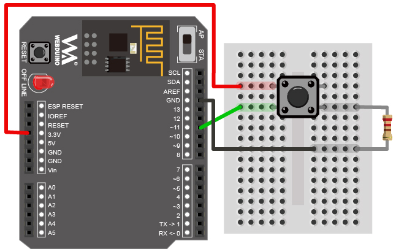
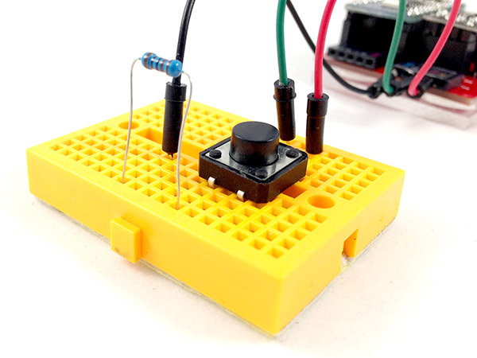
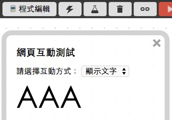

教學範例 9：按鈕開關
開關是日常生活中很常見的電子零件，藉由開和關的訊號，可以控制各種不同的家電，這個範例將會展示，如何藉由獲得按鈕開關的訊號，並且進一步由訊號來控制網頁裡的圖片或 LED 燈的明暗。
範例影片展示
影片對應範例：https://blockly.webduino.io/?page=tutorials/button-1
接線與實作
按鈕開關是一個很常見的元件，當我們進行點壓的時候，按鈕上的四隻腳會呈現全部通路的情形，為了避免有短路的發生，所以我們要接一顆電阻進行保護，下圖是按鈕開關的原理圖。

按鈕開關的接法剛好利用麵包板中間斷路的設計，將四隻腳兩兩成對橫跨兩邊，如此一來按下開關就會四隻腳通路，然後在接 GND 的一側用電阻連接 ( 這種方式稱作下拉電阻，如果接在正電的一側稱之上拉電組 )
馬克一號接線示意圖：

Fly 接線示意圖：

實際接線照片：


Webduino Blockly 操作解析
打開 Webduino Blockly 編輯工具 ( https://blockly.webduino.io )，因為這個範例會用網頁「顯示文字」來根據開關的狀態，顯示不同的文字，所以要先點選右上方「網頁互動測試」的按鈕，打開內嵌測試的網頁，用下拉選單選擇「顯示文字」。

把開發板放到編輯畫面裡，填入對應的 Webduino 開發板名稱，開發板內放入按鈕積木，名稱設定為 button，腳位設定為 11，接著放入三個按鈕的動作，分別是按下、放開和長按，並且讓不同的動作會顯示不同的文字。

完成後，確認開發板上線 ( 點選「檢查連線狀態」查詢 )，點選紅色的執行按鈕就可以按按看按鈕開關，就會看到顯示文字顯示出對應的文字了。 ( 解答：https://blockly.webduino.io/#-K7EhniKOnrgyWt18E4t )

程式碼解析 ( 完整程式碼、檢查連線狀態 )
HTML 的 header 引入 webduino-all.min.js，目的在讓瀏覽器可以支援 WebComponents 以及 Webduino 所有的元件，如果是用 Blockly 編輯工具產生的程式碼，則要額外引入 webduino-blockly.js。
<script src="https://webduino.io/components/webduino-js/dist/webduino-all.min.js"></script>
<script src="https://webduinoio.github.io/webduino-blockly/webduino-blockly.js"></script>
HTML 裡頭有一個 span，負責顯示文字。
<span id="demo-area-01-show">123</span>
JavaScript 可以看到 button 具有一個 on 的事件，裡面第一個參數就是按鈕開關的動作，pressed 是按下，released 是放開，longPress 則是長按，第二個參數是回呼函式，把要做什麼事情寫在這邊就可以。
var button;
boardReady('', function (board) {
board.samplingInterval = 20;
button = getButton(board, 11);
button.on("pressed",function(){
console.log("pressed");
window.alert('AAA');
});
button.on("released",function(){
console.log("released");
window.alert('BBB');
});
button.on("longPress",function(){
console.log("longPress");
window.alert('CCC');
});
});
以上就是利用按鈕開關的按下、放開與長按，來改變網頁裡面的顯示文字。
完整程式碼：http://bin.webduino.io/vaku/edit?html,css,js,output
解答：https://blockly.webduino.io/#-K7EhniKOnrgyWt18E4t
按鈕開關的延伸教學：
Webduino Blockly 課程 4-2：點擊按鈕開關增加數字
Webduino Blockly 課程 4-3：點擊按鈕開關改變圖片位置
Webduino Blockly 課程 4-4：點擊按鈕開關玩賽跑小遊戲
Webduino Blockly 課程 4-4：點擊按鈕開關玩賽跑小遊戲 Webduino Blockly 課程 4-5：點擊按鈕開關控制 Youtube
如果您還想了解更多，可以參考：
2. Blockly 教學：https://goo.gl/h6s7GY
3. 產品總覽：https://webduino.io/buy.html
4. 露天賣場：http://goo.gl/0Dj9ip